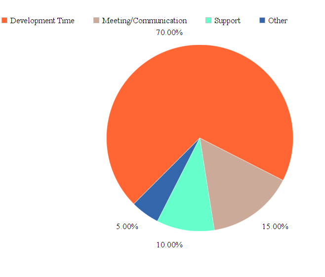

Bo Zhang's Resume

#About Me
My name is Bo Zhang, I'm a software developer with over 6 years software working experience and over 4 years academic study with C#, Java, WCF, WPF, MVC and other .Net technologies. Also I have experience with Python, Salesforce Node.js and other software development skills. Consistently keep good working attitude and love to learn new software technologies.
#Contact Info
 (626)6645269
(626)6645269 xtaihc0007@hotmail.com
xtaihc0007@hotmail.com- https://www.linkedin.com/in/bo-zhang-7ab16518
# Education & Experience
2014-present
Vizio Inc
Application Developer
- Work on a team develop forecasting software. Analysis and develop Object-Oriented Model, front and backend application. Optimization with data structure, algorithm, database SQL, Function and UI.
- Create WCF, Web API webservice to interact with other system and application.
- Manage, track and complete tasks, bugs and User stories in TFS. Working close with other development Team, BSA Team and PMO Team. Good communication and teamwork with Leaders, Developers, BSAs and QA to complete tasks before project deadline.
- Scheduled and participated in code review, daily scrum, sprint meeting with Manager and teammates. Unit test, bug fix and trouble shooting.
2012-2014
D-Link System Inc
Software Engineer
- Develop and maintain company applications, software tools and SQL Server by using ASP.net, C#, WCF, SQL
- Create project unit Test and integrate with Continuous Integration.
- Develop Salesforce application.
2010-2012
DESE Enterprise
Application Developer
- Develop company internal system by VB.net and C#.
- Fix bugs on the code samples that have already been written.
2018-2010
Illinois Insititution of Technology
Major: Information Technology and Management
Degree: Master of Science
#Programming Skills

Recent Projects
Fazio Forecasting Project
Global Forecasting Software which provide business supports to Sales, Financial, Marketing and Accounting department, to help company forecast inventory, shipment, finance, market, etc. Manage and predict allocation, replenishment, Inventory, ODM hub balance to channels. Produce export and import report. Hierarchical permission management. Manage products, channels, vendors by multiple demotions. The software are developed by C#, XAML and MVVM Pattern. Silverlight and Telerik deliver the user friendly UI to present to users. Using multithread to improve performance and concurrency. Using WCF expose the data interface. Using Entity Framework as data ORM to transmit data from SQLSERVER 2008.
Fusion Salesforce Project
An enterprise level system host on SFDC. The project is created by Apex and VisualForce page. Using Eclipse create pages, functionalities, triggers and write unit test code. Interact with .net web service to implement data transmission. Manipulate data by using SOQL query and Data Loader.
ERP Project
An ERP project contains order, RMA, product, report, file, customer relationship, cases and permission management. Integrate with the third party tool to meet the business requirements. The ERP project is an ASP.NET MVC web based application which host on Microsoft Azure cloud. Using Azure storage and SqlServer database to store files and data. Bring user friendly UI by using Bootstrap, Knockout.JS, JqGrid and other JavaScript libraries. Using Entity Framework as an ORM framework. Use Microsoft Report View and ITextSharp to create report and user PDF file. Using ASP.NET MVC authoriztion function to implement Role and Permission function.
Vizio Web Service Project
Using .Net, C#, WCF, Json, EntityFramework, HTTPS, SSL and SQL SERVER to implement Vizio web services which provide a data protal to authorized user or authorized third part software, allow them consum data from our data center.